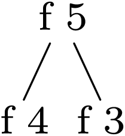

Scheme] |
(+ 1 1) |
Scheme] |
(begin (+ 1 1) (+ 1 3)) |
Scheme] |
(and (begin
(debug-message "std" "branch 1\n")
#t)
(begin
(debug-message "std" "branch 2\n")
#t)) |
Scheme] |
(or (begin
(debug-message "std" "branch 1\n")
#t)
(begin
(debug-message "std" "branch 2\n")
#f)) |
| Scheme] |
Scheme] |
(define result 0) |
| Scheme] | (for (x (list 1 2 3 4)) (set! result (+ result x))) |
Scheme] |
result |
Scheme] |
(define (range n)
(if (<= n 0)
(list )
(append (range (- n 1)) (list n)))) |
Scheme] |
(range 5) |
Scheme] |
(define (sigma1 n)
(define result1 0)
(for (i (range n))
(set! result1 (+ result1 i)))
result1) |
Scheme] |
(sigma1 100) |
| Scheme] |
Scheme] |
(define (sigma2 n)
(if (= n 0)
0
(+ n (sigma2 (- n 1))))); tail recursive |
Scheme] |
(sigma2 100) |
| Scheme] |
Scheme] |
(define (sum start end)
(cond ((> start end) 0)
((= start end) end)
(else (+ start
(sum (+ start 1) end))))) |
Scheme] |
(sum 2 100) |
| Scheme] |
Scheme] |
(define (fib n)
(cond ((= n 0) 0)
((= n 1) 1)
(else (+ (fib (- n 1))
(fib (- n 2)))))) |
Scheme] |
(fib 2) |
Scheme] |
(fib 4) |
Scheme] |
(stree->tree
'(tree "fib 2"
(tree "fib 1" (tree 1))
(tree "fib 0" (tree 0)))) |
| Scheme] ; | scheme tree ‘' |

Scheme] |
(define (fib2 n)
(define a 0)
(define b 1)
(define old_b 0)
(for (i (range n))
(set! old_b b)
(set! b (+ a b))
(set! a old_b))
a) |
Scheme] |
(fib2 2) |
| Scheme] |
Scheme] |
(define (fib3 n)
(define (fib_ab n a b)
(if (<= n 0)
a
(fib_ab (- n 1) b (+ a b))))
(fib_ab n 0 1)) |
Scheme] |
(fib3 -1) |
| Scheme] |